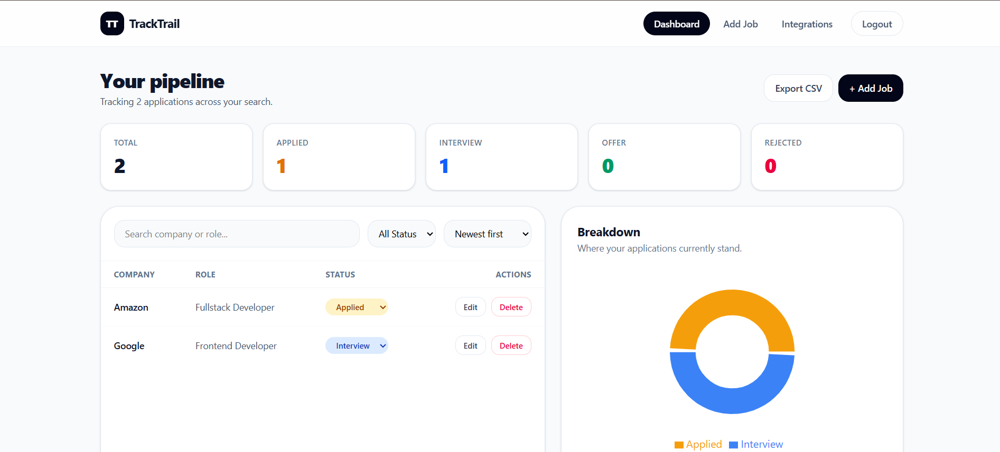
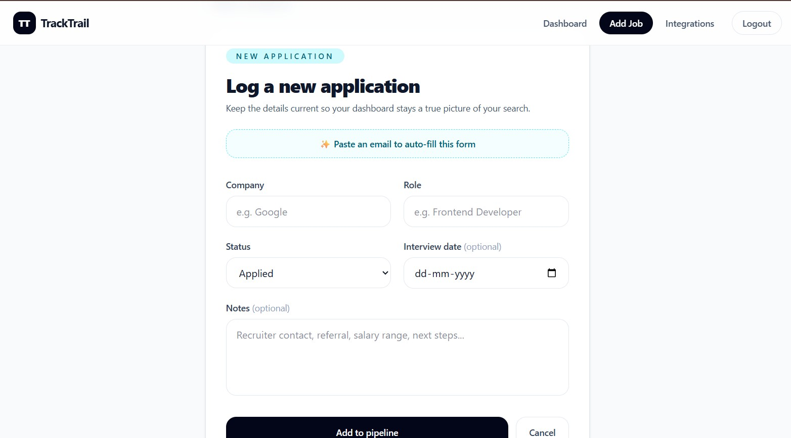
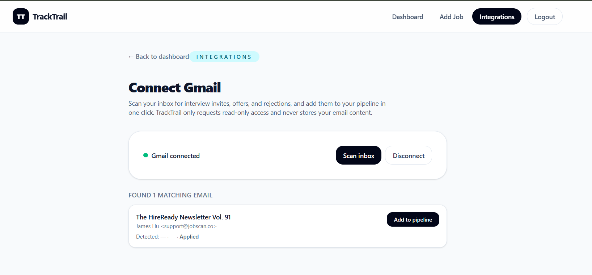
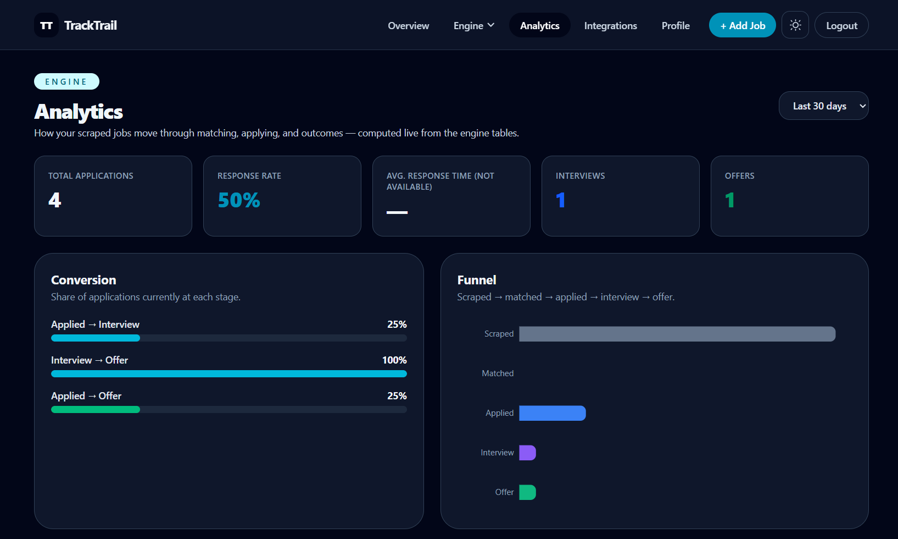
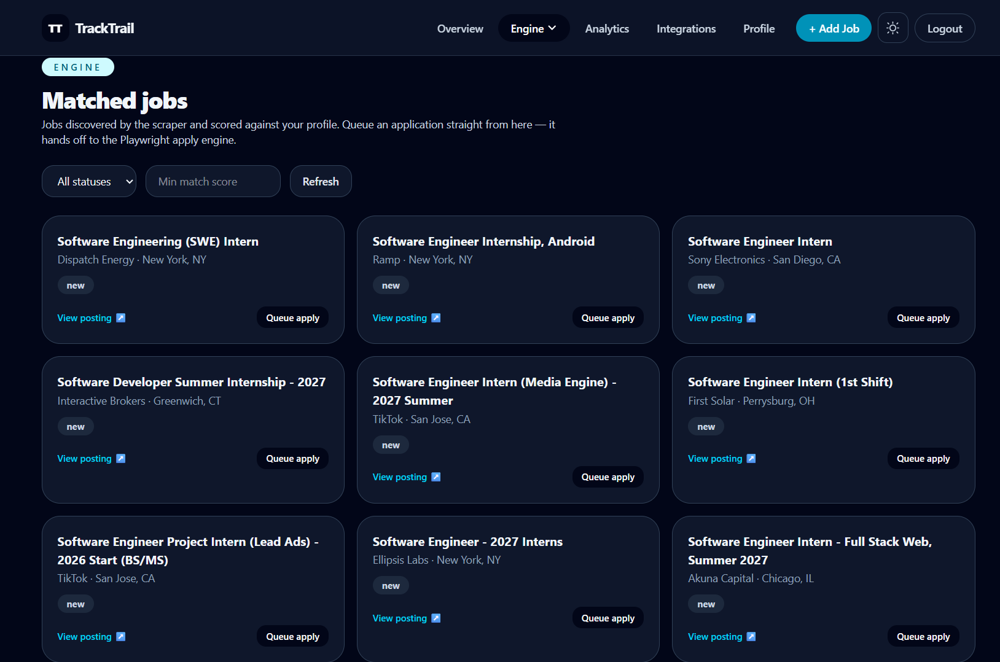

Job Application Tracker — Ingestion, Matching & Analytics Engine
A backend-heavy, multi-user job-application platform that combines capture, multi-source discovery, de-duplication, explainable matching, human-reviewed application preparation, analytics, Gmail ingestion, evidence-constrained resume tailoring, a native mobile client, and a Chrome extension behind one REST API.

Problem
Job searching produces noisy, duplicated, and scattered data. The same role can appear across multiple sources, application state can be split across trackers and email, and manually judging every listing against a candidate profile does not scale. The system treats this as an ingestion, identity-resolution, ranking, and feedback problem rather than just a CRUD problem.
Solution
TrackTrail provides a common pipeline: capture or discover jobs → normalize → exact and bounded fuzzy de-duplication → canonical job record → explainable matching → human-reviewed application preparation → tracked outcome → analytics and learning feedback. Expensive work runs asynchronously through Redis and BullMQ, while the API remains a thin request/validation layer.
Core Capabilities
- Multi-source job discovery through Remotive plus Playwright-based adapters for LinkedIn, Indeed, Naukri, Internshala, Wellfound, and Unstop; provider failures are surfaced as explicit error, blocked, or unavailable states.
- Shared ingestion path for manual tracking, Chrome extension capture, Gmail signals, and discovery where applicable.
- Two-stage de-duplication: exact hash first, then bounded fuzzy comparison for the same company within a 14-day window.
- Deterministic explainable ranking using 0.6 × TF-IDF cosine similarity + 0.4 × weighted skill overlap; scores include an explanation and a score of 70+ marks a job as matched.
-
Human-in-the-loop Playwright application preparation that detects
supported fields, fills what it can, captures the result, and
stops at
pending_reviewbefore final submission. - Gmail read-only OAuth integration for job-related outcome signals; email parsing is not treated as authoritative state mutation.
- Evidence-constrained resume tailoring: an optional server-side LLM can reorder or reword existing resume evidence but cannot invent unsupported skills, employers, or metrics.
- Native Expo/React Native mobile application and Chrome Manifest V3 extension sharing the same backend.
Architecture & Engineering Decisions
- API + worker separation: Node.js 22 / Express 5 handles authentication, validation, scoped data access, and queue submission; a separate worker process owns ingestion, discovery, matching, Playwright automation, and analytics.
- Redis + BullMQ: background work gets retry/backoff behavior and queue history without blocking request/response traffic.
- Canonical identity: exact de-duplication is followed by bounded fuzzy matching; partial unique indexes and PostgreSQL constraints reinforce scoped job identity.
- Explainability over opaque ML: TF-IDF plus weighted skills is deterministic and produces match explanations. An embedding scorer interface exists as a future upgrade path rather than being presented as an implemented ML model.
- Human control: Gmail is a signal, not a write authority, and the apply engine stops before final submission.
- Multi-user isolation: global catalog data and private user data use explicit ownership rules enforced through application checks, PostgreSQL triggers, scoped indexes, and HTTP-level isolation tests.
Technology Stack
Security & Data Model
- bcrypt password hashing with 15-minute access JWTs.
- Opaque 256-bit refresh tokens stored only as SHA-256 hashes, with rotation and reuse detection.
- User/admin RBAC with database-backed account-state checks, token revocation, blocking, deletion, and role safeguards.
- 22 Prisma models, 9 SQL migrations, foreign-key/cascade rules, partial unique indexes, and PostgreSQL ownership triggers.
Verification
The repository documents 532 automated tests: 311 server tests, 54 web-client tests, 92 browser-extension tests, and 75 mobile tests. Verification covers authentication and authorization, multi-user isolation, account lifecycle behavior, PostgreSQL migrations and constraints, extension extraction, resume tailoring, Gmail behavior, client builds/type checks, and queue reliability.
The repository does not claim load-test throughput or latency at scale. External job-board behavior remains subject to markup changes, browser availability, rate limits, authentication walls, and provider blocking; the system reports these conditions rather than attempting to bypass them.
Current Scope



